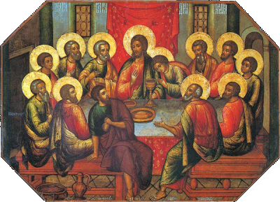

HODIE /  Mercoledì della III settimana di Pasqua
Mercoledì della III settimana di Pasqua
ANTIFONA / Della tua lode è piena la mia bocca: tutto il giorno canto il tuo splendore; cantando le tue lodi esulteranno le mie labbra. Alleluia. (Sal 70,8.23)
CONFITEOR / Confesso a Dio onnipotente e a voi, fratelli e sorelle, che ho molto peccato in pensieri, parole, opere e omissioni, per mia colpa, mia colpa, mia grandissima colpa. E supplico la beata sempre vergine Maria, gli angeli, i santi e voi, fratelli e sorelle, di pregare per me il Signore Dio nostro. Dio onnipotente abbia misericordia di noi, perdoni i nostri peccati e ci conduca alla vita eterna. Signore Pietà, Cristo pietà.
GLORIA / Gloria a Dio nell'alto dei cieli e pace in terra agli uomini di buona volontà. Noi ti lodiamo, ti benediciamo, ti adoriamo, ti glorifichiamo, ti rendiamo grazie per la tua gloria immensa, Signore Dio, Re del cielo, Dio Padre onnipotente. Signore, figlio unigenito, Gesù Cristo, Signore Dio, Agnello di Dio, Figlio del Padre, tu che togli i peccati dal mondo abbi pietà di noi; tu che togli i peccati dal mondo, accogli la nostra supplica; tu che siedi alla destra del Padre, abbi pietà di noi. Perché tu solo il Santo, tu solo il Signore, tu solo l'Altissimo, Gesù Cristo, con lo Spirito Santo: nella gloria di Dio Padre. Amen.
COLLETTA / Assisti, o Padre, la tua famiglia, e a quanti nella tua bontà hai donato la grazia della fede concedi di aver parte all’eredità eterna nella risurrezione del tuo Figlio unigenito. Egli è Dio, e vive e regna con te.
LETTURA1 / Andarono di luogo in luogo, annunciando la Parola / Dagli Atti degli Apostoli (At 8,1b-8) / In quel giorno scoppiò una violenta persecuzione contro la Chiesa di Gerusalemme; tutti, ad eccezione degli apostoli, si dispersero nelle regioni della Giudea e della Samarìa. Uomini pii seppellirono Stefano e fecero un grande lutto per lui. Sàulo intanto cercava di distruggere la Chiesa: entrava nelle case, prendeva uomini e donne e li faceva mettere in carcere. Quelli però che si erano dispersi andarono di luogo in luogo, annunciando la Parola. Filippo, sceso in una città della Samarìa, predicava loro il Cristo. E le folle, unanimi, prestavano attenzione alle parole di Filippo, sentendolo parlare e vedendo i segni che egli compiva. Infatti da molti indemoniati uscivano spiriti impuri, emettendo alte grida, e molti paralitici e storpi furono guariti. E vi fu grande gioia in quella città. / Parola di Dio.
PSALMUS / (Sal 65) Acclamate Dio, voi tutti della terra / Acclamate Dio, voi tutti della terra, cantate la gloria del suo nome, dategli gloria con la lode. Dite a Dio: «Terribili sono le tue opere!». R. / «A te si prostri tutta la terra, a te canti inni, canti al tuo nome». Venite e vedete le opere di Dio, terribile nel suo agire sugli uomini. R. / Egli cambiò il mare in terraferma; passarono a piedi il fiume: per questo in lui esultiamo di gioia. Con la sua forza dòmina in eterno. R.
ACCLAMATIO / Alleluia, alleluia / Chi crede nel Figlio ha la vita eterna, dice il Signore, e io lo risusciterò nell'ultimo giorno. Alleluia. (Gv 6,40) / Alleluia.
VANGELO / Questa è la volontà del Padre: che chiunque vede il Figlio e crede in lui abbia la vita eterna / Dal Vangelo secondo Giovanni (Gv 6,35-40) / In quel tempo, disse Gesù alla folla: «Io sono il pane della vita; chi viene a me non avrà fame e chi crede in me non avrà sete, mai! Vi ho detto però che voi mi avete visto, eppure non credete. Tutto ciò che il Padre mi dà, verrà a me: colui che viene a me, io non lo caccerò fuori, perché sono disceso dal cielo non per fare la mia volontà, ma la volontà di colui che mi ha mandato. E questa è la volontà di colui che mi ha mandato: che io non perda nulla di quanto egli mi ha dato, ma che lo risusciti nell’ultimo giorno. Questa infatti è la volontà del Padre mio: che chiunque vede il Figlio e crede in lui abbia la vita eterna; e io lo risusciterò nell’ultimo giorno». / Parola del Signore.
CREDO / Credo in un solo Dio, Padre onnipotente, creatore del cielo e della terra, di tutte le cose visibili e invisibili. Credo in un solo Signore, Gesù Cristo, unigenito Figlio di Dio, nato dal Padre prima di tutti i secoli: Dio da Dio, Luce da Luce, Dio vero da Dio vero, generato, non creato, della stessa sostanza del Padre; per mezzo di lui tutte le cose sono state create. Per noi uomini e per la nostra salvezza discese dal cielo, e per opera dello Spirito Santo si è incarnato nel seno della Vergine Maria e si è fatto uomo. Fu crocifisso per noi sotto Ponzio Pilato, morì e fu sepolto. Il terzo giorno è risuscitato, secondo le Scritture, è salito al cielo, siede alla destra del Padre. E di nuovo verrà, nella gloria, per giudicare i vivi e i morti, e il suo regno non avrà fine. Credo nello Spirito Santo, che è Signore e dà la vita, e procede dal Padre e dal Figlio. Con il Padre e il Figlio è adorato e glorificato, e ha parlato per mezzo dei profeti. Credo la Chiesa, una santa cattolica e apostolica. Professo un solo battesimo per il perdono dei peccati. Aspetto la risurrezione dei morti e la vita del mondo che verrà. Amen.
OREMUS / Gesù ci invita a fare l'esperienza della fede come visione, cioè come esperienza di vita eterna. Chiediamo di poterlo seguire con gioia, dicendo: Guidaci alla tua conoscenza, Signore. / Perchè i missionari e gli evangelizzatori siano sostenuti dalla grazia dello Spirito, per superare ogni persecuzione e difficoltà. Preghiamo. / Perchè i persecutori della fede cristiana si ravvedano e scoprano la potenza di speranza e di progresso del messaggio evangelico. Preghiamo. / Perchè i cristiani separati nelle varie chiese o confessioni ritrovino l'unità della fede, attraverso un'esperienza autentica del Cristo del vangelo. Preghiamo. / Perchè la nostra comunità parrocchiale abbia a cuore specialmente gli ultimi e dia visibile testimonianza che Dio ha per tutti progetti di bontà e di salvezza. Preghiamo. / Perchè noi qui presenti, saziati così spesso dal pane di vita eterna, possiamo sperimentare l'attrazione del Padre che ci ama. Preghiamo. / Per chi ha fame di verità e di amore. Preghiamo. / Per chi oggi ritornerà alla Casa del Padre. Preghiamo. / O Padre misericordioso, che sazi col pane della vita eterna coloro che attrai per affidarli al Cristo; rendici degni di vedere il tuo Figlio perchè, credendo in lui, abbiamo parte alla risurrezione finale. Per Cristo nostro Signore. Amen.
OFFERTORIO / O Dio, che in questi santi misteri compi l'opera della nostra redenzione, fa' che questa celebrazione pasquale sia per noi fonte di perenne letizia. Per Cristo nostro Signore. ♦ Santifica, o Signore, i doni che portiamo davanti a te in rendimento di grazie; fa’ che la tua parola cresca in noi e renda fecondi i nostri cuori di frutti spirituali. Per Cristo nostro Signore.
PREFAZIO / Cristo vive per sempre e intercede per noi / È veramente cosa buona e giusta, nostro dovere e fonte di salvezza, proclamare sempre la tua gloria, o Signore, e soprattutto esaltarti in questo tempo nel quale Cristo, nostra Pasqua, si è immolato. Egli continua a offrirsi per noi e intercede come nostro avvocato; immolato sulla croce, più non muore, e con i segni della passione vive immortale. Per questo mistero, nella pienezza della gioia pasquale, l’umanità esulta su tutta la terra e le schiere degli angeli e dei santi cantano senza fine l’inno della tua gloria: Santo, Santo, Santo il Signore Dio dell’universo. I cieli e la terra sono pieni della tua gloria. Osanna nell’alto dei cieli. Benedetto colui che viene nel nome del Signore. Osanna nell’alto dei cieli.
COMMUNIO / Il Signore è risorto e ha fatto splendere su di noi la sua luce: egli ci ha redenti con il suo sangue. Alleluia. ♦ Chiunque vede il Figlio e crede in lui ha la vita eterna. Alleluia. (Gv 6,40)

GRATIAS / Esaudisci, o Signore, le nostre preghiere, perché la partecipazione al mistero della redenzione sia per noi aiuto nella vita presente e ci ottenga la gioia eterna. Per Cristo nostro Signore. ♦ O Padre, che in questi sacramenti ci comunichi la forza del tuo Spirito, fa’ che impariamo a cercare te sopra ogni cosa, per portare in noi l’immagine del Cristo crocifisso e risorto. Egli vive e regna nei secoli dei secoli.
LECTIO
EVANGELIZO1 /
EVANGELIZO2 /
EVANGELIZO-21 / Santa Teresa di Calcutta (1910-1997) fondatrice delle Suore Missionarie della Carità / Lettera a un sacerdote, 17/02/1978 / “Io sono il pane della vita” / Hai chiesto di passare tre mesi solo con Gesù (in ritiro); cosa che ti sembra giusta. Ma se in questo tempo la fame di Gesù nel cuore di qualche membro del suo popolo è più grande della tua, non dovresti restare solo con Gesù sempre. Devi permettere a Gesù di trasformarti in pane per essere mangiato da coloro con cui vieni a contatto. Lasciati divorare dagli altri; con la parola e la presenza tu proclami Gesù. (...) Anche Dio non poteva offrire un amore più grande che donandosi lui stesso come Pane di vita – per essere spezzato, per essere mangiato affinché tu ed io potessimo mangiare e vivere, potessimo mangiare e così soddisfare la nostra fame d'amore. Eppure non sembrava soddisfatto, poiché anche lui aveva fame d'amore. Si è dunque fatto l'affamato, l'assetato, il nudo, il senza-casa e non ha smesso di dire: “Avevo fame, ero nudo, ero senza casa. L'avete fatto a me” (Mt 25,40). Il Pane di vita e l'affamato, ma un solo amore: solo Gesù.
DiBruno1 /
DiBruno2 /
DIBRUNO-21 / Chi viene a me non avrà fame (Gv 6,35-40) / Nell’Antica Scrittura adorare il Signore secondo verità si può, a condizione che si partecipi al banchetto della Sapienza. La Sapienza è prima di tutto la Legge, osservata nel timore di Dio. Ma è anche la conoscenza immediata della divina volontà per una perfetta e ininterrotta obbedienza ad essa. Vive di Sapienza chi si nutre di Sapienza. Obbedisce a Dio chi conosce oggi, in questo istante, cosa il Signore vuole dalla sua vita. Poiché ogni momento va vissuto dalla volontà di Dio, ogni momento va conosciuta la divina volontà e per questo sempre si deve chiedere al Signore una speciale rivelazione: “Ora, figli, ascoltatemi: beati quelli che seguono le mie vie! Ascoltate l’esortazione e siate saggi, non trascuratela! Beato l’uomo che mi ascolta, vegliando ogni giorno alle mie porte, per custodire gli stipiti della mia soglia. Infatti, chi trova me trova la vita e ottiene il favore del Signore; ma chi pecca contro di me fa male a se stesso; quanti mi odiano amano la morte». La sapienza si è costruita la sua casa, ha intagliato le sue sette colonne. Ha ucciso il suo bestiame, ha preparato il suo vino e ha imbandito la sua tavola. Ha mandato le sue ancelle a proclamare sui punti più alti della città: Chi è inesperto venga qui!». A chi è privo di senno ella dice: «Venite, mangiate il mio pane, bevete il vino che io ho preparato. Abbandonate l’inesperienza e vivrete, andate diritti per la via dell’intelligenza»” (Sap 8,32-9,6). “O voi tutti assetati, venite all’acqua, voi che non avete denaro, venite, comprate e mangiate; venite, comprate senza denaro, senza pagare, vino e latte. Perché spendete denaro per ciò che non è pane, il vostro guadagno per ciò che non sazia? Su, ascoltatemi e mangerete cose buone e gusterete cibi succulenti. Porgete l’orecchio e venite a me, ascoltate e vivrete (Is 55,1-5). Senza la quotidiana rivelazione, si conosce la Legge, ma la Legge non regola tutti i momenti della vita. Si ha sempre bisogno di luce attuale e va chiesta al Signore. Tutto il Libro della Sapienza rivela questa verità. Con Cristo Gesù avviene un cambiamento sostanziale. Si passa dal mangiare spiritualmente la Sapienza, al Mangiare Lui, Sapienza Eterna del Padre, veramente, realmente, essenzialmente. Ma come si mangia Cristo Gesù? Prima di tutto mangiando la sua Parola, tutta la sua Parola, facendola divenire nostra Legge, nostra verità, nostra giustizia, nostra Luce. Se la Parola di Gesù non viene mangiata, anche se si mangia il suo corpo e si beve il suo sangue, a nulla serve. Corpo e sangue sono dati perché si viva tutta la Parola. / In quel tempo, disse Gesù alla folla: «Io sono il pane della vita; chi viene a me non avrà fame e chi crede in me non avrà sete, mai! Vi ho detto però che voi mi avete visto, eppure non credete. Tutto ciò che il Padre mi dà, verrà a me: colui che viene a me, io non lo caccerò fuori, perché sono disceso dal cielo non per fare la mia volontà, ma la volontà di colui che mi ha mandato. E questa è la volontà di colui che mi ha mandato: che io non perda nulla di quanto egli mi ha dato, ma che lo risusciti nell’ultimo giorno. Questa infatti è la volontà del Padre mio: che chiunque vede il Figlio e crede in lui abbia la vita eterna; e io lo risusciterò nell’ultimo giorno». / Il pane della vita è tutto Cristo, nel suo cuore, nella sua anima, nel suo spirito, nel suo corpo, nella sua Parola, nel suo sangue, nella sua verità e grazia, nella sua luce e vita eterna. Cristo si dona ad ogni uomo nella fede. Si crede in Lui, si accoglie tutta la sua Parola, la sua verità, la sua Persona, si estingue la sete. Cristo non è venuto da se stesso. Lo ha inviato il Padre. Come Mosè è stato mandato dal Padre, così anche Gesù è stato mandato dal Padre. Mosè è venuto per liberare dalla schiavitù d’Egitto. Gesù è venuto per liberare dalla morte eterna e per operare la gloriosa risurrezione per ogni uomo. Ma per quale uomo Lui opererà la risurrezione? Per l’uomo che viene a Lui, che crede in Lui, che mangia Lui, vero pane di vita eterna. Non solo Cristo Gesù ci fa ritornare nella nostra verità di creazione, ci eleva in una verità ancora più grande. Per grazia in Lui, per Lui, con Lui, siamo generati come nuove creature, mai però possiamo vivere secondo la nuova verità, se non ci nutriamo di Lui, pane di Parola e pane Eucaristico. Cristo Gesù va mangiato per intero. Se noi dividiamo Cristo Parola dal Cristo Pane, non abbiamo Cristo Gesù. Lui è uno e indivisibile. Questa la sua verità. / Madre della Redenzione, Angeli, Santi, fate che ci nutriamo di tutto Cristo, sempre.
SILVESTRINI-21 / Ne' fame, ne' sete... "Tutto ciò che il Padre mi dà, verrà a me; colui che viene a me, non lo respingerò...". Il Signore, buon pastore, non può respingere le sue pecore che, disperse per i pascoli, sono richiamate ad entrare nell'unico ovile che protegge e rassicura... Il Signore, pane di vita, non può sottrarsi alla mensa alla quale accorriamo affamati... se anche siamo scomposti e maldestri, abbiamo in noi la grazia della fede, dono che sostiene la nostra preghiera, che ci fa comprendere che il Signore è seduto accanto a noi, per volontà del Padre e per suo desiderio ardente. Lo Spirito ci comunica queste verità, ci conduce come Chiesa attraverso situazioni che non possono trovarci silenti e privi di bene: come vera famiglia radicata in Cristo siamo chiamati ad andare di paese in paese per diffondere la sua parola, a prostrarci cantando inni al Signore, ad esortare per vedere e lodare insieme il suo mirabile agire sugli uomini. Papa Francesco ce lo ricorda in continuazione... di non essere Chiesa chiusa. Siamo eredi di una forza di amore e di donazione che ci rende vivi; "Dio ci ha salvati mediante un lavacro di rigenerazione e di rinnovamento nello Spirito santo, effuso da lui su di noi abbondantemente per mezzo di Gesù Cristo, salvatore nostro, perché giustificati dalla sua grazia diventassimo eredi, secondo la speranza, della vita eterna". Tutto è divenuto prezioso per il dono che Cristo ha fatto di sé, e tutto possiamo rendere prezioso se anche noi ci doniamo come carne che si consuma per nutrire la Chiesa. Vi fu grande gioia nell'ascoltare la voce dello Spirito e ancora oggi può esserci se rispondiamo ai richiami che ci invitano a superare il nostro limite, se, come i discepoli di un tempo, vediamo il Signore che colma il cuore di gioia. Dio Padre ci ha consegnato a Cristo che con il suo braccio legato al nostro, ci strattona nella corsa sulla pista della croce; ... "questa è la volontà di colui che mi ha mandato, che io non perda nulla di quanto egli mi ha dato, ma lo risusciti nell'ultimo giorno".
LOYOLA1 /
LOYOLA2 /
LOYOLA-21 / Donami, Signore, di credere ogni giorno nella tua promessa di vita. Che il profumo del pane accompagni i miei passi e il suono dell’acqua e del vino versati per me diano ritmo alla mia quotidianità. Che il suono del pane croccante, appena sfornato, spezzato e condiviso diventi il mio modo di agire la vita. Quando i miei occhi non vedono, siano i profumi e i suoni di cui mi parli ad accompagnare ogni mio gesto. Quando mi sembrerà di perdere tutto, di essere vaso vuoto, ricordami che nulla che sia per me mi verrà mai tolto e che ciò che perdo oggi è per avere il meglio domani. Insegna ai miei occhi a riconoscere la vita anche dove sembra che non ci sia, a credere anche quando sembra impossibile perché tutto è contro. Fa’ che il mio cuore non dimentichi mai che questa è tuo desiderio per me: che io stia bene sempre, senza fame, senza sete, eternamente ricolma della tua vita luminosa e piena. / Quando ho avuto più fame e più sete? Quale luogo della mia vita affido oggi perché risusciti? Cosa mi fa sentire pienamente figlio? (Martina Pampagnin)
LettureBose / Pace a tutti / Noi domandiamo la pace nelle nostre chiese, nelle preghiere, nelle suppliche, nei saluti. Una, due, tre volte, un gran numero di volte chi presiede l'assemblea dona la pace dicendo: "Pace a voi". Perché? Perché essa è madre di tutti i beni e fondamento della gioia. Per questo anche Cristo ordinò agli apostoli di dire queste parole quando entravano nelle case, quale simbolo di ogni bene. Entrando nelle case dite: "La, pace sia con voi" (Mt 10,12), perché senza la pace tutto è inutile. E diceva ancora ai discepoli: Vi lascio la pace, vi do la mia pace (Gv 14,27). Essa prepara la via alla carità. E chi presiede l'assemblea non dice semplicemente: "Pace a voi", ma: "Pace a tutti". Che guadagno vi sarebbe avere la pace con l'uno ed essere in guerra e in lotta con un altro? Che guadagno vi sarebbe? Anche per quanto riguarda il nostro corpo: se alcune parti stanno bene e altre invece stanno male, non ci può essere la salute; occorre che tutte le parti del nostro corpo godano di buona salute, di accordo reciproco e di pace. Se non vi è tale quiete e ogni membro del corpo non si limita alla propria funzione, allora l'intero organismo è sconvolto. Ma anche nella nostra mente se non sono in pace i pensieri, non vi è pace. La pace è un dono tanto grande che quelli che lavorano per la pace e fanno opera di riconciliazione sono chiamati figli di Dio (Mt 5,45) e giustamente. Il Figlio di Dio infatti è venuto sulla terra per mettere pace tra cielo e terra ... Pace a tutti! Ma ascoltate che cosa dice Cristo: In qualunque città o villaggio andiate, prima di entrare in una casa, salutate e se la casa ne sarà degna la vostra pace scenderà su di essa; se non ne sarà degna, la vostra pace ritornerà su di voi (Mt 10,11-13). Ma noi non ci rendiamo conto di quello che diciamo e le nostre labbra non concordano con il nostro cuore. Sono forse io a dare la pace? No, è Cristo che acconsente a parlare attraverso di noi. (Giovanni Crisostomo, Omelie sulla Lettera ai Colossesi I,3,4)
FEGF1 / Sono venuto a portare il fuoco sulla terra di Sant’Isacco Siriano nel settimo secolo / Fatti violenza (Mt 11,12), sforzati di imitare l’umiltà di Cristo, affinché si accenda sempre di più il fuoco che egli ha gettato in te, questo fuoco nel quale sono consumati tutti gli impulsi di questo mondo che distruggono l’uomo nuovo e macchiano le dimore del Signore santo e potente. Affermo infatti con san Paolo che “siamo il tempio di Dio” (2Cor 6,16). Purifichiamo dunque il suo tempio “come egli è puro” (1Gv 3,3) affinché egli abbia il desiderio di dimorarvi; santifichiamolo, come egli è santo (1Pt 1,16); orniamolo di tutte le opere buone e degne. Riempiamolo del riposo della sua volontà, come di un profumo, con la preghiera pura, cioè la preghiera del cuore, che non si può acquistare abbandonandosi agli impulsi continui di questo mondo. Allora la nube della sua gloria coprirà la tua anima, e la luce della sua grandezza brillerà nel tuo cuore (1Re 8,10). Tutti coloro che dimorano nella casa di Dio saranno ricolmi di gioia e si rallegreranno. Invece gli insolenti e gli immondi scompariranno sotto la fiamma dello Spirito Santo.
FEGF2 / «Colui che ha fatto l’esterno non ha forse fatto anche l’interno?» di Santa Teresa d'Avila nel sedicesimo secolo / Se io avessi capito, come oggi, quale grande Re abitava in quel piccolo palazzo della mia anima, non l’avrei lasciato da solo così spesso; sarei rimasta di tanto in tanto accanto a lui, e avrei fatto il necessario affinché il palazzo fosse meno sporco. Quanto è mirabile pensare che colui la cui grandezza potrebbe riempire mille mondi e anche molto di più, si rinchiude così in una così piccola dimora. È vero che, da una parte, essendo sovrano Signore, porta con lui la libertà, e dall’altra, essendo pieno di amore per noi, si fa alla nostra misura. Sapendo bene che un’anima principiante potrebbe turbarsi al vedere se stessa, così piccola, destinata a contenere tanta grandezza, egli non si fa conoscere immediatamente; ma, poco a poco, fa crescere la capacità dell’anima, alla misura dei doni che egli si propone di collocare in essa. A motivo di questo suo potere di allargare il palazzo della nostra anima, ho detto che porta con lui la libertà. Il punto capitale è fargliene un dono assoluto e vuotarsi completamente, affinché egli possa riempire o svuotare a suo piacimento, come in una dimora che gli appartiene. A ragione, nostro Signore vuole che così sia; non rifiutiamoci. Egli non vuole forzare la nostra volontà; riceve quello che essa gli dà. Ma lui si dà interamente solo quando anche noi ci diamo interamente. La cosa è certa, e ve la ripeto così spesso perché è importantissima. Finché l’anima non è interamente sua, sgombrata di tutto, egli non agisce in essa. Del resto, non so come potrebbe farlo, colui che ama tanto l’ordine perfetto. Se riempiamo il palazzo con gente volgare e ogni sorta di ninnoli, come il sovrano, con la sua corte, potrebbe trovarvi posto? È già molto che si degni di fermarsi qualche momento in mezzo a tanto ingombro.
RobertoPasolini / Eppure / Nel vangelo di Giovanni la fede viene sempre descritta come un vero e proprio movimento esistenziale, un dinamismo che scuote e indirizza la vita del discepolo dietro ai passi del suo Signore. Lontano da concezioni astratte o teoriche, il quarto vangelo offre un’immagine molto plastica del cammino credente rappresentandolo – anche linguisticamente – come una consapevole adesione alla parola di Gesù, che implica la disponibilità a mettere i propri passi sulle sue orme, fino a trovare gusto nel condividere il suo stesso nutrimento interiore che è fare la volontà del Padre: «Io sono il pane della vita; chi viene a me non avrà fame e chi crede in me non avrà sete, mai!» (Gv 6,35). Potremmo dire che, nella prospettiva del quarto Vangelo, non esiste una fede che non si esprima anche nella concretezza di una sequela dove si è disposti ad avventurarsi in sentieri sconosciuti e in logiche diverse da quelle con cui si è abituati a orientarsi. Ogni altra modalità di riporre in Dio la fiducia, che non si misuri con la concretezza del reale e della storia, rischia inevitabilmente di oscillare tra due pericolose mistificazioni: il servilismo e l’opportunismo. La prima modalità, che nei vangeli sinottici viene definita «spirito impuro» (cf. Mc 1,21-28), non è altro che un timor di Dio capace di esprimersi in atteggiamenti religiosi, ma in realtà incapace di reale affidamento alla sua grazia. La seconda, invece, si nutre dell’illusione di poter piegare Dio al nostro bisogno, approfittando della sua bontà e della sua misericordia, senza però vivere un sincero coinvolgimento con la sua volontà e con il suo disegno di salvezza. La fede come cammino, al contrario, è semplicemente la disponibilità a seguire un Altro – Dio – senza pretendere di poter controllare o verificare l’esito del viaggio. Proprio a causa di questa strutturale incertezza di fondo, il cammino della fede ammette anche pericolose battute d’arresto: «Vi ho detto però che voi mi avete visto, eppure non credete» (Gv 6,36). Il Signore Gesù non ha paura di far cadere le maschere della facile e apparente adesione alle esigenti condizioni del suo Vangelo. Per quanto possiamo appassionarci alla causa del Regno e immergerci con slancio nel desiderio di una vita filiale e fraterna, sappiamo bene quanto sia facile puntare i piedi quando ci viene chiesto di seguire il Signore Gesù nei sentieri che avvertiamo più ostili o minacciosi per la nostra sensibilità. Il motivo di questa possibile chiusura viene esemplificato dal racconto degli Atti, dove scopriamo che perseverare nella fede significa esporsi, inevitabilmente, a improvvise forme di martirio: «In quel giorno scoppiò una violenta persecuzione contro la Chiesa di Gerusalemme; tutti, ad eccezione degli apostoli, si dispersero nelle regioni della Giudea e della Samaria» (At 8,1). Eppure, proprio un momento così drammatico, quando la furia dell’odio e della gelosia si scatena contro i primi testimoni del Risorto, diventa nella provvidenza di Dio un’occasione perché alcuni apostoli si scoprano capaci non solo di andare «di luogo in luogo annunciando la Parola», ma anche di offrire a ogni uomo la forza rigenerante del Vangelo di salvezza: «Da molti indemoniati uscivano spiriti impuri, emettendo alte grida, e molti paralitici e storpi furono guariti. E vi fu grande gioia in quella città» (At 8,7-8). Prima di accedere alla grande gioia della Pasqua, dobbiamo oltrepassare la paura di essere respinti e rifiutati, non solo dagli uomini, ma da Dio stesso. Cadiamo in questa forma di pericoloso timore quando alcuni ambiti della nostra realtà personale restano chiusi e refrattari al dono dello Spirito Santo e alla sua capacità di svolgere un ministero di consolazione e di guarigione dentro le ferite della nostra storia. Di fronte a questo tipo di chiusura possiamo soltanto sperare di essere raggiunti dalla voce del Figlio di Dio e dal suo desiderio di vita piena per tutti e per ciascuno: «Tutto ciò che il Padre mi dà, verrà a me: colui che viene a me, io non lo caccerò fuori, perché sono disceso dal cielo non per fare la mia volontà, ma la volontà di colui che mi ha mandato» (Gv 6,37-38).
MichaelDavideSemeraro / Il tuo nome è Gioia, alleluia! / La prima lettura ci mette di fronte, per la prima volta in modo così intenso, non solo al dramma della persecuzione, ma anche a quella che potremmo definire la grazia della persecuzione. La morte di Stefano rappresenta, nella storia della Chiesa, a partire da ciò che è stato vissuto dalla prima comunità cristiana, un momento importantissimo: ai discepoli è riservata la stessa sorte del loro maestro e questo invece di indebolire non fa che rafforzare ulteriormente la loro testimonianza e il loro entusiasmo. Se le prime parole evocano la «violenta persecuzione contro la Chiesa di Gerusalemme» (At 8,1), le ultime parole sono invece: «E vi fu grande gioia in quella città» (At 8,8). Tra la persecuzione e la gioia. Forse sarebbe meglio dire che la gioia è frutto della persecuzione nella misura in cui si sa accogliere il mistero della dispersione, che diventa una sorta di necessità e quasi condizione per l’ampliarsi dell’evangelizzazione: «Quelli però che si erano dispersi andarono di luogo in luogo, annunciando la Parola» (8,4). Il vento della Pentecoste sembra che continui a spazzare il cielo della storia attraverso il vento della persecuzione che permette comunque, in un modo o nell’altro, che il polline del Vangelo fecondi i fiori della nostra umanità, sempre più lontano e sempre più in alto, diventando promessa di un raccolto più che abbondante. Il Signore Gesù si fa nutrimento della nostra gioia e della nostra pienezza di vita: «E questa è la volontà di colui che mi ha mandato: che io non perda nulla di quanto egli mi ha dato, ma che lo risusciti nell’ultimo giorno» (Gv 6,39). Il destino di risurrezione è il desiderio del Padre per ciascuno dei suoi figli, pertanto questa risurrezione non è rimandata in un lontano futuro, ma è l’esperienza di una relazione con Cristo Signore che ci fa partecipi della stessa vita divina. Sembra che il Signore Gesù abbia bisogno di ribadirlo: «Questa infatti è la volontà del Padre mio: che chiunque vede il Figlio e crede in lui abbia la vita eterna; e io lo risusciterò nell’ultimo giorno» (Gv 6,40). La salvezza si riceve da un altro come un sorriso, perché radica nella stessa vita della Trinità e sgorga dalla stessa intimità divina: è relazione, dialogo, condivisione, comunione allo stesso pane, fraternità che nasce e si rafforza nella condivisione dei propri bisogni e delle proprie necessità. Essere salvati ed essere inondati di gioia è semplice come un “buongiorno” o un “ciao” pieno di allegra tenerezza. La gioia pasquale è come il lievito impastato con la nostra vita quotidiana e persino banale, perché la nostra esistenza sia contrassegnata da una libertà capace di dilatare gli spazi della comunione e della condivisione. La gioia è più che un sentimento, è il frutto di un lungo lavoro su se stessi il quale comincia sempre con l’aratro di una volontà che sa sarchiare la terra del cuore per fare spazio a solchi capaci di accogliere e custodire il seme del Vangelo come premessa necessaria per il raccolto di una carità sempre più ampia e autentica. Gioia non è che il volto di un amore sempre più dato, persino nella persecuzione dell’incomprensione o del rifiuto.
LuigiMariaEpicoco / Già da ora / Che cosa vuole donarci Dio? Qual è il Suo sogno per ciascuno di noi? Il Vangelo di oggi sembra rispondere proprio a questa domanda: “Questa infatti è la volontà del Padre mio: che chiunque vede il Figlio e crede in lui abbia la vita eterna; e io lo risusciterò nell’ultimo giorno”. Ma è sbagliato pensare che la vita eterna è una questione solo dell’aldilà. La vita eterna è una questione anche dell’al di qua. È qui che inizia questa vita eterna. È qui che per noi inizia o il paradiso o l’inferno. E il paradiso non è non avere problemi. Il paradiso è sapersi amati e di Qualcuno. E ugualmente l’inferno è non sentirsi amati e di nessuno. Se ti sai amato tutto è paradiso anche i problemi. Ma se non ti senti amato tutto è inferno anche le cose belle. Dopo la morte ciò che abbiamo scelto con la nostra libertà diventa definitivo. Ma è qui che facciamo le nostre scelte. È qui che scegliamo o no Cristo. Ecco allora perché forse dovremmo riformulare le parole di Gesù in modo da comprendere fino in fondo che cos’è la resurrezione. La resurrezione è avere una vita nuova che ti viene donata dall’amore, dal saperti amato. Persino la morte fugge davanti all’amore. “L’amore è più forte della morte” si legge del Cantico dei cantici. Allora non dobbiamo leggere “lo risusciterò nell’ultimo giorno”, ma “lo risusciterò ogni giorno, fino all’ultimo”. Ecco perché allora dovremmo imparare a considerare due aspetti della nostra fede: uno che ha a che fare con il presente e uno che ha che fare con il destino ultimo. Tutto ciò che è destino ultimo non è semplicemente dopo, ma è già qui. È qui nascosto nel segno. La realtà è già carica del nostro destino ultimo, ma lo è come un sacramento. Dobbiamo quindi sempre decifrare quel destino nelle cose di questo mondo. Ma ciò non basta perché dobbiamo ricordarci che alla fine questo fatto emergerà con evidenza, sarà appunto un fatto e non più semplicemente segno di qualcosa che verrà. Il futuro diverrà presente e ognuno di noi vivrà per sempre di ciò che ha scelto ogni giorno già da ora.
HomilyVoice-21 / PRIMA LETTURA Quelli però che si erano dispersi andarono di luogo in luogo, annunciando la Parola. Filippo, sceso in una città della Samaria, predicava loro il Cristo. E le folle, unanimi, prestavano attenzione alle parole di Filippo, sentendolo parlare e vedendo i segni che egli compiva. Le persecuzioni per la fede è come il crogiolo con l’oro. L’oro nel crogiolo si libera da tutte le impurità. La fede nella persecuzione si libera da tutto ciò che non è pensiero del Signore, non è sua volontà. Sulla prova e sulle persecuzioni ecco cosa rivela l’Apostolo Pietro: Perciò siete ricolmi di gioia, anche se ora dovete essere, per un po’ di tempo, afflitti da varie prove, affinché la vostra fede, messa alla prova, molto più preziosa dell’oro – destinato a perire e tuttavia purificato con fuoco – torni a vostra lode, gloria e onore quando Gesù Cristo si manifesterà. Voi lo amate, pur senza averlo visto e ora, senza vederlo, credete in lui. Perciò esultate di gioia indicibile e gloriosa, mentre raggiungete la mèta della vostra fede: la salvezza delle anime (1Pt 1,6-9). Carissimi, non meravigliatevi della persecuzione che, come un incendio, è scoppiata in mezzo a voi per mettervi alla prova, come se vi accadesse qualcosa di strano. Ma, nella misura in cui partecipate alle sofferenze di Cristo, rallegratevi perché anche nella rivelazione della sua gloria possiate rallegrarvi ed esultare. Beati voi, se venite insultati per il nome di Cristo, perché lo Spirito della gloria, che è Spirito di Dio, riposa su di voi. Nessuno di voi abbia a soffrire come omicida o ladro o malfattore o delatore. Ma se uno soffre come cristiano, non ne arrossisca; per questo nome, anzi, dia gloria a Dio. È questo il momento in cui ha inizio il giudizio a partire dalla casa di Dio; e se incomincia da noi, quale sarà la fine di quelli che non obbediscono al vangelo di Dio? E se il giusto a stento si salverà, che ne sarà dell’empio e del peccatore? Perciò anche quelli che soffrono secondo il volere di Dio, consegnino la loro vita al Creatore fedele, compiendo il bene (1Pt 4, 12-19). Mentre la Lettera Agli Ebrei parla della persecuzione come vera correzione da parte del Signore nostro Dio. Come un padre corregge i suoi figli, così il Signore corregge quanti credono in Lui. Anche noi dunque, circondati da tale moltitudine di testimoni, avendo deposto tutto ciò che è di peso e il peccato che ci assedia, corriamo con perseveranza nella corsa che ci sta davanti, tenendo fisso lo sguardo su Gesù, colui che dà origine alla fede e la porta a compimento. Egli, di fronte alla gioia che gli era posta dinanzi, si sottopose alla croce, disprezzando il disonore, e siede alla destra del trono di Dio. Pensate attentamente a colui che ha sopportato contro di sé una così grande ostilità dei peccatori, perché non vi stanchiate perdendovi d’animo. Non avete ancora resistito fino al sangue nella lotta contro il peccato e avete già dimenticato l’esortazione a voi rivolta come a figli: Figlio mio, non disprezzare la correzione del Signore e non ti perdere d’animo quando sei ripreso da lui; perché il Signore corregge colui che egli ama e percuote chiunque riconosce come figlio. È per la vostra correzione che voi soffrite! Dio vi tratta come figli; e qual è il figlio che non viene corretto dal padre? Se invece non subite correzione, mentre tutti ne hanno avuto la loro parte, siete illegittimi, non figli! Del resto noi abbiamo avuto come educatori i nostri padri terreni e li abbiamo rispettati; non ci sottometteremo perciò molto di più al Padre celeste, per avere la vita? Costoro infatti ci correggevano per pochi giorni, come sembrava loro; Dio invece lo fa per il nostro bene, allo scopo di farci partecipi della sua santità. Certo, sul momento, ogni correzione non sembra causa di gioia, ma di tristezza; dopo, però, arreca un frutto di pace e di giustizia a quelli che per suo mezzo sono stati addestrati. Perciò, rinfrancate le mani inerti e le ginocchia fiacche e camminate diritti con i vostri piedi, perché il piede che zoppica non abbia a storpiarsi, ma piuttosto a guarire (Eb 12,1-13). La persecuzione è quel vento potente dello Spirito Santo che come uragano si abbatte sulla comunità cristiana statica e con poca vita e la rimette nuovamente in movimento, la rende feconda di altra vita. Infatti i discepoli di Gesù lasciano la Giudea e si disperdono di luogo in luogo, annunciando la Parola del Signore. Senza questo vento dello Spirito Santo i discepoli del Signore sarebbero rimasti sempre in Giudea e il Vangelo difficilmente avrebbe valicato i confini di questa terra. Che ne sarebbe stato di Cristo Gesù senza la persecuzione? Mai sarebbe stato vittima di espiazione per i nostri peccati. L’Apostolo Paolo è stato sempre accompagnato dalla persecuzione. Da questa veniva spinto da un luogo ad un altro e in ogni città sempre predicava il Vangelo. LEGGIAMO At 8,1b-8 In quel giorno scoppiò una violenta persecuzione contro la Chiesa di Gerusalemme; tutti, ad eccezione degli apostoli, si dispersero nelle regioni della Giudea e della Samaria. Uomini pii seppellirono Stefano e fecero un grande lutto per lui. Saulo intanto cercava di distruggere la Chiesa: entrava nelle case, prendeva uomini e donne e li faceva mettere in carcere. Quelli però che si erano dispersi andarono di luogo in luogo, annunciando la Parola. Filippo, sceso in una città della Samaria, predicava loro il Cristo. E le folle, unanimi, prestavano attenzione alle parole di Filippo, sentendolo parlare e vedendo i segni che egli compiva. Infatti da molti indemoniati uscivano spiriti impuri, emettendo alte grida, e molti paralitici e storpi furono guariti. E vi fu grande gioia in quella città. La persecuzione spinge da un luogo ad un altro luogo. Ma non basta la persecuzione perché il Vangelo attiri altre persone a Cristo Gesù. Occorre che il Vangelo sia predicato secondo le regole del Vangelo. Quali sono queste regole? Ce le rivela l’Apostolo Paolo nella Lettera ai Romani: Non oserei infatti dire nulla se non di quello che Cristo ha operato per mezzo mio per condurre le genti all’obbedienza, con parole e opere, con la potenza di segni e di prodigi, con la forza dello Spirito (Rm 15,18-19). Filippo predica il Vangelo secondo le regole del Vangelo e molti prestavano attenzione alle sue parole. Ma c’è una regola universale che tutti devono osservare se si vuole che il Vangelo attecchisca nei cuori. Questa regola è l’obbedienza ad ogni Parola di Vangelo di colui che il Vangelo annuncia. Pensare di predicare il Vangelo senza piena obbedienza alla Parola del Vangelo, è somma stoltezza e insieme. Sarebbe come se un adultero parlasse di fedeltà coniugale, un ladro del rispetto della cosa altrui, un violento annunciasse pace, una persona con l’odio nel cuore narrasse l’amore di Gesù per noi, miseri peccatori. Ecco qual è il nostro segno, il prodigio che sempre dobbiamo compiere: presentarci al mondo sempre con i frutti dello Spirito prodotti dal nostro corpo: “Amore, gioia, pace, magnanimità, benevolenza, bontà, fedeltà, mitezza, dominio di sé” (Gal 5,22). Questi segni tutti li possiamo compiere. Senza questi segni, privi noi di questi frutti, neghiamo con la vita ciò che diciamo con il cuore. Il mondo lo vede e mai crederà nelle nostre Parole. LETTURA DEL VANGELO E questa è la volontà di colui che mi ha mandato: che io non perda nulla di quanto egli mi ha dato, ma che lo risusciti nell’ultimo giorno. Questa infatti è la volontà del Padre mio: che chiunque vede il Figlio e crede in lui abbia la vita eterna; e io lo risusciterò nell’ultimo giorno». La coscienza di Cristo deve essere la coscienza di ogni suo discepolo. Il Padre ha dato a Cristo Gesù le sue pecore in custodia. Gesù le deve custodire perché nessuna di esse vada perduta. Se qualcuna di esse dovesse perdersi per sua negligenza o omissione in qualche cosa, il Padre gliene domanderà conto. Dove sono le pecore che io ti ho dato? Gesù con questa coscienza vive e con questa coscienza muore. Prima di consegnarsi volontariamente alla passione ecco cosa dice al Padre: “Quand’ero con loro, io li custodivo nel tuo nome, quello che mi hai dato, e li ho conservati, e nessuno di loro è andato perduto, tranne il figlio della perdizione, perché si compisse la Scrittura. Ma ora io vengo a te e dico questo mentre sono nel mondo, perché abbiano in se stessi la pienezza della mia gioia. Io ho dato loro la tua parola e il mondo li ha odiati, perché essi non sono del mondo, come io non sono del mondo” (Gv 17,12-14). Le pecore non solo si custodiscono. Gesù le nutre donando loro da mangiare il suo corpo e da bere il suo sangue: “Io sono il buon pastore, conosco le mie pecore e le mie pecore conoscono me, così come il Padre conosce me e io conosco il Padre, e do la mia vita per le pecore. E ho altre pecore che non provengono da questo recinto: anche quelle io devo guidare. Ascolteranno la mia voce e diventeranno un solo gregge, un solo pastore. Per questo il Padre mi ama: perché io do la mia vita, per poi riprenderla di nuovo. Nessuno me la toglie: io la do da me stesso. Ho il potere di darla e il potere di riprenderla di nuovo. Questo è il comando che ho ricevuto dal Padre mio» (Gv 10,14-18). Una pecora data dal Padre a Cristo si può perdere solo per sua personale responsabilità. Si perde perché non si è lasciata né nutrire né custodire dal Buon Pastore: “Le mie pecore ascoltano la mia voce e io le conosco ed esse mi seguono. Io do loro la vita eterna e non andranno perdute in eterno e nessuno le strapperà dalla mia mano. Il Padre mio, che me le ha date, è più grande di tutti e nessuno può strapparle dalla mano del Padre. Io e il Padre siamo una cosa sola» (Gv 10,27-29). Il Buon Pastore tutto ha fatto perché nessuna pecora andasse perduta. La Parabola della pecora smarrita rivela a noi un’altra altissima verità. Quando una pecora si smarrisce, Gesù non lascia che si perda. Va Lui stesso a cercarla: “Che cosa vi pare? Se un uomo ha cento pecore e una di loro si smarrisce, non lascerà le novantanove sui monti e andrà a cercare quella che si è smarrita? In verità io vi dico: se riesce a trovarla, si rallegrerà per quella più che per le novantanove che non si erano smarrite. Così è volontà del Padre vostro che è nei cieli, che neanche uno di questi piccoli si perda” (Mt 18,12-14). La cura delle pecore del Padre è perfetta in Cristo Gesù. Questa stessa cura la troviamo sia nell’Apostolo Pietro che in Paolo: “Esorto gli anziani che sono tra voi, quale anziano come loro, testimone delle sofferenze di Cristo e partecipe della gloria che deve manifestarsi: pascete il gregge di Dio che vi è affidato, sorvegliandolo non perché costretti ma volentieri, come piace a Dio, non per vergognoso interesse, ma con animo generoso, non come padroni delle persone a voi affidate, ma facendovi modelli del gregge. E quando apparirà il Pastore supremo, riceverete la corona della gloria che non appassisce” (1Pt 5,1-4). Infatti, pur essendo libero da tutti, mi sono fatto servo di tutti per guadagnarne il maggior numero: mi sono fatto come Giudeo per i Giudei, per guadagnare i Giudei. Per coloro che sono sotto la Legge – pur non essendo io sotto la Legge – mi sono fatto come uno che è sotto la Legge, allo scopo di guadagnare coloro che sono sotto la Legge. Per coloro che non hanno Legge – pur non essendo io senza la legge di Dio, anzi essendo nella legge di Cristo – mi sono fatto come uno che è senza Legge, allo scopo di guadagnare coloro che sono senza Legge. Mi sono fatto debole per i deboli, per guadagnare i deboli; mi sono fatto tutto per tutti, per salvare a ogni costo qualcuno. Ma tutto io faccio per il Vangelo, per diventarne partecipe anch’io” (1Cor 9,19-23). Mirabile esempio che ci mostra come si cercano le pecore di Gesù e anche come esse vadano curate, custodite, difese, protette. LEGGIAMO IL TESTO DI Gv 6,35-40 Gesù rispose loro: «Io sono il pane della vita; chi viene a me non avrà fame e chi crede in me non avrà sete, mai! Vi ho detto però che voi mi avete visto, eppure non credete. Tutto ciò che il Padre mi dà, verrà a me: colui che viene a me, io non lo caccerò fuori, perché sono disceso dal cielo non per fare la mia volontà, ma la volontà di colui che mi ha mandato. E questa è la volontà di colui che mi ha mandato: che io non perda nulla di quanto egli mi ha dato, ma che lo risusciti nell’ultimo giorno. Questa infatti è la volontà del Padre mio: che chiunque vede il Figlio e crede in lui abbia la vita eterna; e io lo risusciterò nell’ultimo giorno». Gesù Signore non è venuto per fare la sua volontà. È venuto per eseguire un comando dato a Lui dal Padre. Questo comando lo porta a compimento sempre sotto la potente mozione dello Spirito Santo. Prima verità: Nessun pastore del Padre è dalla sua volontà. Sempre deve essere dalla volontà del Padre. Nessun Pastore di Cristo Gesù deve essere dalla sua volontà. Sempre dovrà essere dalla volontà di Cristo Gesù. Sarà dalla volontà di Cristo Gesù se si lascerà muovere, condurre, spingere dallo Spirito Santo. La mozione dovrà essere perfetta, ininterrotta, attimo per attimo. Seconda verità: Le pecore date dal Padre a Cristo Gesù non solo vanno cercate, vanno anche nutrite, custodite, colmate di vita eterna, guidate fino alle sorgenti eterne delle acque della vita nella nuova Gerusalemme. Il Pastore di Cristo compirà questa missione consumando se stesso così come Cristo si è consumato come olocausto bruciato dal fuoco della sua carità, della sua fede, della sua speranza. Terza verità: Se anche una sola pecora si dovesse perdere per omissione in poche o in molte cose da parte del Pastore, il Signore gliene domanderà conto. Lui è responsabile della perdita delle pecore di Cristo Gesù che sono pecore del Padre. Su questa responsabilità si parla assai poco o non se ne parla affatto. Il Pastore è responsabile in eterno. Quarta verità: Se la pecora si perde perché non si è lasciata guidare, condurre, nutrire dal Pastore la responsabilità è sua. Ecco la confessione pubblica dell’Apostolo Paolo a Mileto: “Attesto solennemente oggi, davanti a voi, che io sono innocente del sangue di tutti, perché non mi sono sottratto al dovere di annunciarvi tutta la volontà di Dio. Vegliate su voi stessi e su tutto il gregge, in mezzo al quale lo Spirito Santo vi ha costituiti come custodi per essere pastori della Chiesa di Dio, che si è acquistata con il sangue del proprio Figlio. Io so che dopo la mia partenza verranno fra voi lupi rapaci, che non risparmieranno il gregge; perfino in mezzo a voi sorgeranno alcuni a parlare di cose perverse, per attirare i discepoli dietro di sé. Per questo vigilate, ricordando che per tre anni, notte e giorno, io non ho cessato, tra le lacrime, di ammonire ciascuno di voi (At 20,26-31). Madre del Buon Pastore, fa che ogni Pastore in Cristo Gesù, come i Santi Apostoli Pietro e Paolo, imitino il loro Maestro e Signore, consacrando al servizio delle pecore di Cristo Gesù, tutta la loro vita. Per il tuo aiuto noi ti ringraziamo e ti benediciamo in eterno, Madre Santa. Amen.
Backlinks:
QUOTIDIE